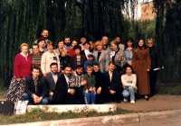
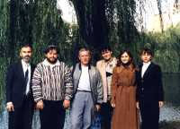
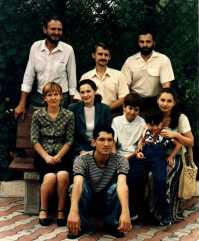
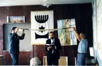

Этот сайт в помощь начинающим знакомство с иудаизмом подготовила независимая религиозная община сыновей Ноя "Хатиква" ("Надежда") города Донецка. Собрались люди, ищущие Всевышнего и не удовлетворенные ни христианством, ни восточными учениями, ни, тем более, западной постхристианской цивилизацией. Осенью 1997 г. мы стали первой зарегистрированной в Украине общиной мессианских евреев. Изучение Письменной и Устной Торы постепенно очищало наше мировоззрение от мессианского иудаизма и продвигало к собственно иудаизму. Ко времени осознания нами иудаизма самодостаточным и не нуждающимся во внешних идеях, многие члены общины-евреи уехали в Святую Землю, а оказавшиеся в большинстве неевреи уже не мыслили себя вне этой религии. К середине 2002г. мы полностью отошли от мессианского иудаизма и зарегистрировались как "сыновья Ноя" (первыми в СНГ).
Определяем свое направление как иудаизм для неевреев, исходя из сбалансированного сочетания двух положений:
1) еврейский народ избран Всевышним для выполнения исторической миссии, которая еще не завершена;
2) полного подчинения жизни Закону правды и любви Творец хочет от всех людей, а не только от евреев.


На субботних собраниях обсуждаем недельные главы Торы и комментарии к ним, поем на иврите и русском, читаем Сидур. Отмечаем все еврейские праздники, стараемся понять их общечеловеческий философский смысл. Особое внимание уделяем теме семьи.Считаем движение Бней Ноах чрезвычайно важным и актуальным, уверены в его развитии и ожидаем заинтересованного участия раввинов.
Главная задача - научиться жить, внося в мир свет Торы.